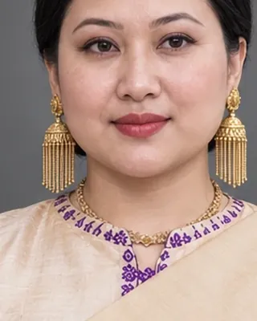

অম্বিকা
Bar Raja 1732–1739 · Queen who ruled as Bar Raja

Phuleswari's sister. Sponsored the Hastividyarnava and the Sivasagar Siva Doul.
Sources give her death as 1738 or the end of her reign as 1739.
Record confidence: medium.
Open interactive profile
1734